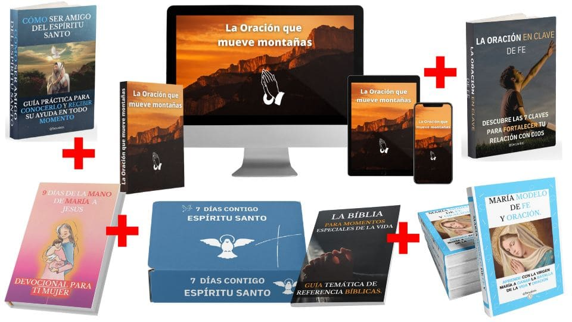

EL PODEROSO SECRETO DE ORACIÓN QUE LOS DISCÍPULOS USABAN PARA SER ESCUCHADOS POR DIOS

POR FAVOR, VERIFIQUE QUE SU SONIDO ESTÉ ENCENDIDO!
SÌ, QUIERO APRENDER EL MÉTODO DE ORACIÓN QUE MUEVE MONTAÑAS
Añadir al Carrito

RECUERDA:
Por cada compra alimentas a Misioneros en el África, Niños huérfanos y Ancianos desamparados.
OBTENDRÁS TODO ESTO:
1. ORACIÓN QUE MUEVE MONTAÑAS
2. 7 CLAVES PARA FORTALECER TU RELACIÓN CON DIOS
3. CÓMO SER AMIGO DEL ESPÍRITU SANTO
4. MARÍA MODELO DE FE Y ORACIÓN
5. DEVOCIONAL 7 DÍAS CONTIGO ESPÍRITU SANTO
6. GUÍA BÍBLICA PARA MOMENTOS ESPECIALES DE VIDA
7. 9 DÍAS DE LA MANO DE MARÍA A JESÚS
8. BONOS ESPECIALES SORPRESA
EN ESTA OCASIÓN ESPECIAL PODRÁS ACCEDER CON ESTA OFERTA
OFERTA DISPONIBLE HASTA HOY A LAS 11:59PM
NORMALMENTE VALORADO EN$400 USD
EN ESTA OFERTA ESPECIAL: $29 USD
SÌ, QUIERO APRENDER EL MÉTODO DE ORACIÓN QUE MUEVE MONTAÑAS
Añadir al Carrito
OFERTA DISPONIBLE HASTA HOY A LAS 11:59PM
NORMALMENTE VALORADO EN
EN ESTA OFERTA ESPECIAL: $29 USD
SÌ, QUIERO APRENDER EL MÉTODO DE ORACIÓN QUE MUEVE MONTAÑAS
Añadir al Carrito
Añadir al Carrito
PIRATERIA Y CRIMEN
La venta del producto "LA ORACIÓN QUE MUEVE MONTAÑAS" sólo puede ser realizada a través de este sitio, registrado al nombre de BMC LTDA. Cualquier otro sitio donde encuentre este programa es una FALSIFICACIÓN y utiliza contenidos ilegales o pirateados.
Copyright 2022 – BMC LTDA ®
Todos los derechos reservados.